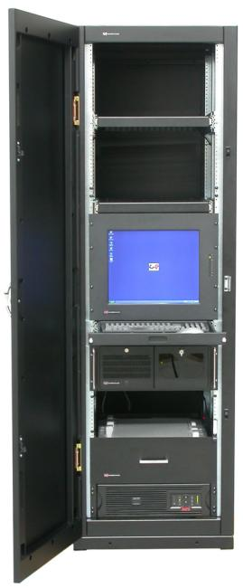
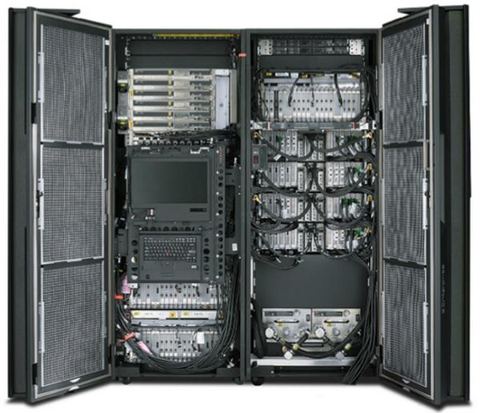
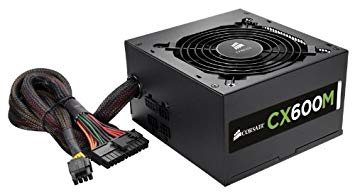
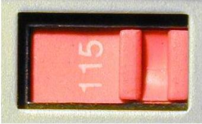

A system is a general term that can mean many things, but here we are referring to information systems, hardware that runs an operating system and can access networks. Systems come in many shapes and sizes, categorized by their chassis.
Chassis
A computer chassis, more commonly called a computer case, is the enclosure that contains most of the components of a computer. Devices such as the display, keyboard, and mouse are considered peripherals to a server or desktop, but may also be built in to the chassis in the case of laptops or mobile devices.
The different chassis sizes are called "form factors". The size, shape, and name of a computer case is usually determined by the form factor of the motherboard, since it is the largest component of most computers. Desktop form factors typically specify only the internal dimensions and layout of the case.
Form factors for rack-mounted systems must themselves fit in specific enclosures, there are fewer types than desktops.
Rack
|  |
A 19-inch rack is a standardized frame or enclosure for mounting multiple electronic equipment modules. Each module has a front panel that is 19 inches (48.3 cm) wide.
The 19-inch dimension includes the edges, or "ears", that protrude on each side which allow the module to be fastened to the rack frame with screws. The height of the electronic modules is also standardized as multiples of 1.752 inches (44.50 mm) or one rack unit or U.The industry standard rack cabinet is 42U tall. Equipment designed to be placed in a rack is typically described as having a rack-mount chassis.Common uses include server, telecom, broadcast video, lighting, audio, and scientific lab equipment. |
Server
Any system on a network can be a both client and a server at the same time. Servers are anything on a network that serves data, and clients are anything that requests data. For example a server is also a client when it sends data to a backup server, to authenticate users from a authentication server, or to get software updates over the network.
If your workstation is sharing data over the network, it is also a server. If the printer is connected to the network directly it is a print server. If it requires an external device to connect the network, then that external device is the print server.
Hardware designed to run as a full time server is different than that of a workstation. For that reason it is a different system type. There are many different types of systems that act as servers and many different types of things they can serve. Common types of servers are file servers, print servers, web servers, database servers, application servers, back-up servers, to name a few.
Sometimes server hardware is specific to the type of serving or the volume of serving that will be done. There are large servers called main frames, other big ones called super computers, and groups of servers that act like one big system called server "clusters".

Desktop
The term PC used to refer to any kind of personal computer and was used all the time in the 1970s and 80s because back then, that was the only type of hardware an individual would use. Today there are many choices like laptops, tablets, phones, and single board computers.
Laptop

A laptop is designed to be more portable than a desktop, but works with the same basic concepts as desktops. Collectively desktops and laptop are called "workstations".
Mobile Device (Cellphone, Tablet)

Tablets and cell phones are lumped together because they often run the same type of operating system, use wireless network access and otherwise are getting hard to find differences in. Some large phones are the same size as some small tablets, and tablets how have apps that allow them to make calls. They are both designed to be even more portable than a laptop and are collectively referred to as "moble devices".
Power Supply Unit
 
The power supply unit (PSU) converts AC current from the wall outlet into the DC currents the system needs to run. In a desktop or laptop, +5, -5, +12 and -12 voltages are generated. The 3 and 5 volts are used for the electronic circuitry, and the 12 volts are required for any spinning drives.
Modern personal computers universally use switched-mode power supplies. Some power supplies have a manual switch for selecting input voltage, while others automatically adapt to the mains voltage.
Manual Switch PSU
If your PSU has a manual input switch as seen above on the right take note: Running a power supply set to 220 on a 120 volt wall outlet will just prevent it from working, but if it is set to 120 and you plug it into a 220 volt outlet, you will most likely damage it. If you are lucky there will be a fuse you can replace to fix it, but if you hear a POP, see some smoke, or smell burned material, it will need to be replaced.
Fortunately, power supplies usually come installed with the PC case and are standardized between Desktop and Laptops, so you will probably never have to choose between power supplies, but if you do, here are a few things to look for in a power supply: